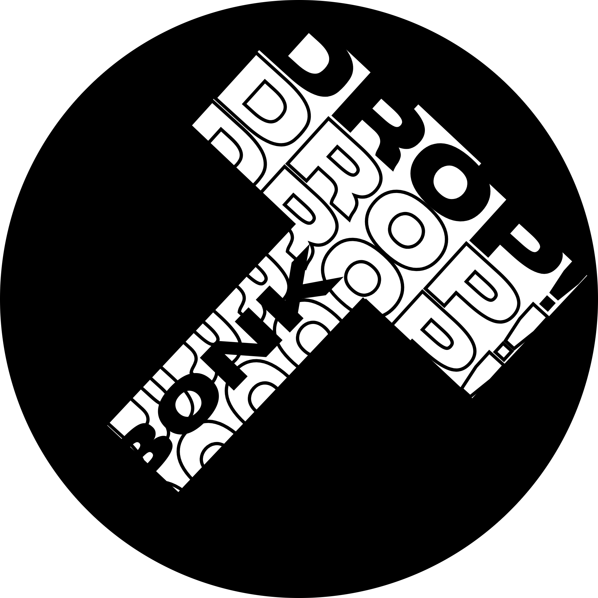

BonkDrop
Conditions d'utilisation, confidentialité et mentions légales
Informations encadrant l'utilisation du service BonkDrop, l'hébergement des fichiers et le traitement des données techniques nécessaires à son fonctionnement.
Dernière mise à jour : 31 mai 2026
1. Présentation du service
BonkDrop est un service gratuit permettant de partager des fichiers via un lien simple.
Le service permet de téléverser tout type de fichier (vidéo, PDF, DOCX, image, ISO, etc.) et d'obtenir un lien compatible avec différents services de communication et de messagerie.
Le principe du site est de permettre, lorsque la plateforme le prend en charge, une prévisualisation directe du fichier à l'endroit où le lien est saisi (par exemple une preview d'un fichier DOCX dans WhatsApp via le lien).
Chaque upload est limité à un seul fichier de 2 Go maximum, ou à plusieurs fichiers représentant un total cumulé de 2 Go par envoi.
Le quota maximum quotidien est de 5 Go par jour.
Dans le futur, il pourra être proposé de payer pour envoyer davantage de fichiers ou de volume, soit sous forme de paiement unique, soit sous forme d'abonnement, avec des tarifs raisonnables pensés pour soutenir la plateforme et la personne derrière son exploitation.
Le service est proposé gratuitement et sans publicité.
2. Hébergement des fichiers
Les fichiers sont hébergés directement sur mon serveur, en France, dans un environnement sécurisé et chiffré.
BonkDrop agit uniquement comme une interface permettant l'envoi des fichiers et la génération de liens de partage.
Le stockage et la conservation des fichiers sont assurés dans une infrastructure que je gère moi-même, et le nom du fichier est chiffré dès son arrivée dans le stockage.
3. Durée de conservation des fichiers
Les fichiers envoyés via BonkDrop restent disponibles sans limite de durée tant qu'ils ne sont pas supprimés.
Aucun compte n'est nécessaire pour supprimer ses fichiers.
La suppression peut être effectuée depuis le même appareil que celui utilisé pour l'envoi, grâce à la vérification de l'adresse IP associée au dépôt.
Sans suppression volontaire par l'utilisateur ou retrait administratif, les fichiers peuvent rester accessibles de manière permanente.
4. Base de données et fonctionnement technique
BonkDrop utilise une base de données interne permettant de gérer le fonctionnement du service.
Cette base de données peut contenir certaines informations techniques nécessaires, notamment :
- l'identifiant unique d'un fichier
- le nom du fichier, chiffré lors de son arrivée dans le stockage
- le lien de stockage du fichier
- certaines métadonnées techniques liées au service
La base de données est hébergée chez moi et protégée par des mesures de sécurité techniques destinées à empêcher les accès non autorisés.
5. Gratuité et absence de publicité
BonkDrop est un service :
- entièrement gratuit
- sans publicité
- sans revente de données
Aucune donnée personnelle des utilisateurs n'est vendue ou exploitée à des fins commerciales.
6. Données collectées
Afin d'assurer le bon fonctionnement et la sécurité du service, certaines données techniques peuvent être collectées automatiquement, notamment :
- l'adresse IP
- la date et l'heure d'utilisation du service
- certaines informations techniques liées au navigateur ou à l'appareil utilisé
Ces informations sont utilisées uniquement pour assurer la sécurité, la stabilité et le fonctionnement du service.
7. Utilisation des données
Les données collectées sont utilisées uniquement pour :
- assurer le fonctionnement du service
- générer les liens de partage
- maintenir la sécurité et la stabilité de la plateforme
BonkDrop ne vend pas, ne loue pas et ne partage pas les données des utilisateurs à des fins commerciales.
8. Contenu autorisé
Le service autorise le partage de contenu NSFW (Not Safe For Work).
Cependant, les contenus suivants sont strictement interdits :
- contenu illégal
- contenu impliquant des mineurs
- contenu violent ou criminel
- contenu enfreignant les lois en vigueur
- contenu portant atteinte aux droits d'auteur ou aux droits d'autrui
Tout contenu illégal peut être supprimé sans préavis et au bout de plusieurs suppression, un bannissement peut suivre.
9. Compatibilité des plateformes
Les liens BonkDrop sont conçus pour fonctionner avec plusieurs plateformes et services de communication.
Les vidéos peuvent notamment être compatibles avec :
- Discord
- les services de messagerie électronique
- les navigateurs web modernes
- les applications de messagerie compatibles avec les aperçus de liens
- les lecteurs vidéo basés sur les standards HTML5
La compatibilité peut varier selon les politiques et les mises à jour des plateformes tierces.
10. Signalement de contenu abusif
Si un contenu hébergé via BonkDrop est jugé illégal ou abusif, il est possible de le signaler afin qu'il soit examiné.
Les signalements peuvent concerner notamment :
- contenu illégal
- violation de droits d'auteur
- contenu impliquant des mineurs
- contenu dangereux ou malveillant
Tout contenu jugé contraire aux lois ou aux règles du service peut être supprimé.
11. Limitation de responsabilité
BonkDrop agit uniquement comme une interface de génération de liens et de partage de fichiers.
BonkDrop ne peut être tenu responsable :
- du contenu partagé par les utilisateurs
- de l'utilisation des liens générés
Les utilisateurs sont responsables du contenu qu'ils partagent via le service.
12. Sécurité
BonkDrop met en oeuvre des mesures techniques visant à protéger les informations nécessaires au fonctionnement du service.
Cependant, aucun système informatique ne peut garantir une sécurité absolue.
Si des fichiers venaient à fuiter, ils ne seraient pas lisibles car ils sont chiffrés, y compris dans mon propre stockage.
Par respect de la vie privée personnelle et professionnelle, je ne consulte pas les fichiers partagés, sauf cas particulier comme un signalement, une demande de retrait ou une demande des autorités compétentes.
Dans ce cadre, les entreprises peuvent aussi utiliser le service pour partager des fichiers importants sans qu'ils soient consultés manuellement.
13. Modification des conditions
Les présentes conditions peuvent être modifiées à tout moment afin de refléter l'évolution du service. Le site n'est pas à sa version 1.0 officielle, donc il peut y avoir des suppressions de fichiers, des fonctionnalitées ajoutées, modifiées ou pas encore présentes. Tant qu'il sera en alpha, il ne sera pas garanti que les fonctionnalités dites dans les CGU soient complètement implémentées et stables.
La version la plus récente sera toujours disponible sur le site BonkDrop.
14. Contact
Pour toute question concernant le service, les présentes conditions, un signalement de contenu, ou une demande sur un fichier devenu innacessible, il est possible de contacter l'équipe BonkDrop via e-mail ou Discord.
15. Soutenir le site
Si vous avez aimé le site, vous pouvez me soutenir via Ko-fi. Je vous assure que cela m'aide énormément, et je vous en serait infiniment reconnaissant, car je gère cette infrastructure seul et que cela me coûte de l'argent. Merci infiniment pour votre soutien, confiance, et support ! Profitez bien du service ! (^-^*)/